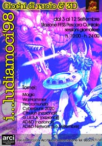
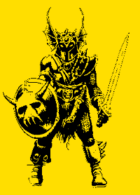
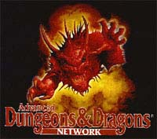

i.. ludiamoci: 1995 | 1996 | 1997 | 1998 | 1999
Per quanto riguarda la sezione dei giochi di ruolo e 3D si svolgeranno una serie di tornei legati ai giochi di Magic, WarHammer, Necromunda, Cyberpunk 2020, Cthuluh, G.I.R.S.A. e AD&D.
 In particolare i tornei di Cthuluh, G.I.R.S.A e AD&D avranno validità nazionale, saranno inoltre dedicati due giorni per i tornei dell'AD&D Network.
{kind=link}
Tutti i tornei si svolgeranno nei locali della Stazione Centrale FFSS di Pescara e inizieranno Venerdì 4 Settembre per terminare Domenica 13 Settembre.
Il programma di massima per i tornei sarà il seguente:
Giovedì 3 Settembre
Dimostrativi di WarHammer e Fantasy Warrior
Venerdì 4 Settembre
10.00/13.00 Dimostrativi 3D
15.30/19.30 Tornei di Cthuluh (nazionali)
21.00/24.00 Finali torneo di Cthuluh
Sabato e Domenica 5/6 Settembre
10.00/13.00 Tornei AD&D Network
15.30/19.30 Tornei AD&D Network
21.00/24.00 Dimostrativi
Lunedì 7 Settembre
10.00/13.00 Tornei WarHammer (I° sessione)
15.30/19.30 Tornei WarHammer (II° sessione)
Martedì 8 Settembre
10.00/13.00 Tornei WarHammer (III° sessione)
15.30/19.30 Tornei WarHammer (IV° sessione)
21.00/24.00 Finali torneo WarHammer
Mercoledì 9 Settembre
15.30/19.30 Tornei Cyberpunk 2020 (nazionali)
21.00/24.00 Finali torneo Cyberpunk 2020
Giovedì 10 Settembre
10.00/13.00 Tornei Necromunda (I° sessione)
15.30/19.30 Tornei Necromunda (II° sessione)
21.00/24.00 Finali torneo Necromunda
Venerdì 11 Settembre
15.30/19.30 Tornei G.I.R.S.A. (nazionali)
21.00/24.00 Finali torneo G.I.R.S.A.
Sabato 12 Settembre
15.30/19.30 Tornei AD&D. (nazionali)
21.00/24.00 Finali torneo AD&D
Domenica 13 Settembre
15.30/19.30 Torneo Magic
Le iscrizioni ai tornei sono gratuite e dovranno pervenire, agli organizzatori della manifestazione, entro il giorno precedente lo svolgimento del torneo.
 E' possibile iscriversi in anticipo riempiendo la form di iscirizione on-line, riportata di seguito.
Si prevedono un massimo di 30 persone per ogni torneo tranne per il torneo di Magic e dell'AD&D Newtork (per quest'ultimo si prevedono un max. di 50 persone).
Sono previsti dei premi per i primi due classificati di ogni torneo (molto probabilmente si tratterà di buoni acquisto presso negozi specializzati in giochi di ruolo e miniature).
Le ambientazioni di gioco per i tornei 3D verranno allestite dall'organizzazione, si prevedono allestimenti per 6 tavoli contemporanei.
Iscrizione On-Line
Per avere maggiori informazioni sui tornei nazionali e sull'AD&D Network cliccate sui link seguenti:
